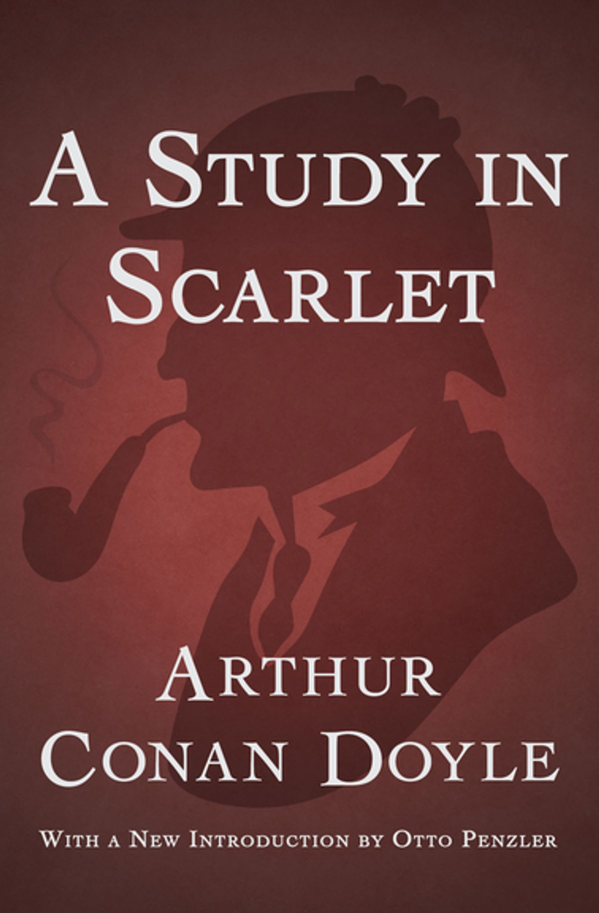
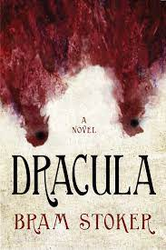
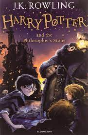

A STUDY IN SCARLET
Arthur Conan Doyle
A Study in Scarlet is an 1887 detective novel written by Arthur Conan Doyle. The story marks the first appearance of Sherlock Holmes and Dr. Watson, who would become the most famous detective duo in literature. The book's title derives from a speech given by Holmes, a consulting detective, to his friend and chronicler Watson on the nature of his work, in which he describes the story's murder investigation as his "study in scarlet": "There's the scarlet thread of murder running through the colourless skein of life, and our duty is to unravel it, and isolate it, and expose every inch of it.
DRACULA

Bram Stoker
Dracula is a novel by Bram Stoker, published in 1897. As an epistolary novel, the narrative is related through letters, diary entries, and newspaper articles. It has no single protagonist, but opens with solicitor Jonathan Harker taking a business trip to stay at the castle of a Transylvanian noble, Count Dracula. Harker escapes the castle after discovering that Dracula is a vampire, and the Count moves to England and plagues the seaside town of Whitby. A small group, led by Abraham Van Helsing, hunt Dracula and, in the end, kill him.
ROBIN HOOD

Howard Pyle
Robin Hood is a legendary heroic outlaw originally depicted in English folklore and subsequently featured in literature and film. According to legend, he was a highly skilled archer and swordsman.[1] In some versions of the legend, he is depicted as being of noble birth, and in modern retellings he is sometimes depicted as having fought in the Crusades before returning to England to find his lands taken by the Sheriff. In the oldest known versions he is instead a member of the yeoman class. Traditionally depicted dressed in Lincoln green, he is said to have robbed from the rich and given to the poor.
PHILOSOPHERS

J. K. Rowling
Harry Potter and the Philosopher's Stone (released in the United States, India and the Philippines as Harry Potter and the Sorcerer's Stone) is a 2001 fantasy film directed by Chris Columbus and distributed by Warner Bros. Pictures, based on J. K. Rowling's 1997 novel of the same name. Produced by David Heyman and screenplay by Steve Kloves, it is the first instalment of the Harry Potter film series. The film stars Daniel Radcliffe as Harry Potter, with Rupert Grint as Ron Weasley, and Emma Watson as Hermione Granger. Its story follows Harry's first year at Hogwarts School of Witchcraft and Wizardry as he discovers that he is a famous wizard and begins his formal wizarding education.